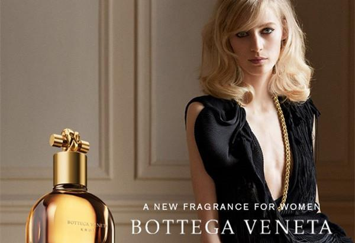
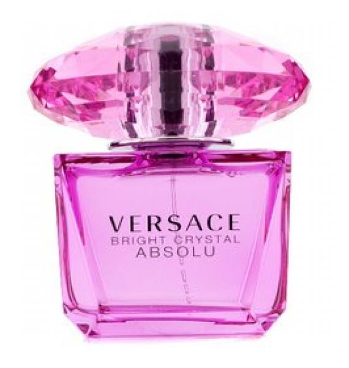

品牌资讯

葆蝶家推出全新Knot香水
葆蝶家（Bottega Veneta）最新发表的 Knot 香水，以其经典的 Knot 手拿包为瓶身灵感，完美的融合了橙花、熏衣草、玫瑰、牡丹、麝香和香豆等香氛，唤回意大利度假胜地 Riviera 的悠闲舒适氛围，并且带来现代女性的摩登气息。
经典赏析：香奈儿5号各个版本详解
香奈儿5号Chanel No.5的故事已经广为人知了。虽然现在不少人戏称之为肥皂水味，认为香奈儿5号这款老香水并不符合现行的市场口味。但香奈儿5号在香水历史上里程碑式的意义，和其独有的奢华品质是毋庸置疑的，它在市场营销上的成功也绝不是偶然。

范思哲臻挚粉钻女士VERSACE ABSOLU香水上市
近日，VERSACE品牌邀请众多时尚媒体齐聚北京通惠河畔东方红酒窖，共同见证VERSACE BRIGHT CRYSTAL ABSOLU臻挚粉钻女士香水新品发布。正如VERSACE品牌创意总监Donna Versace女士所描述："范思哲臻挚粉钻香水汇聚了世间的极致精髓，浓郁的香气让人感受到极致明快、极致感性、极致诱惑。